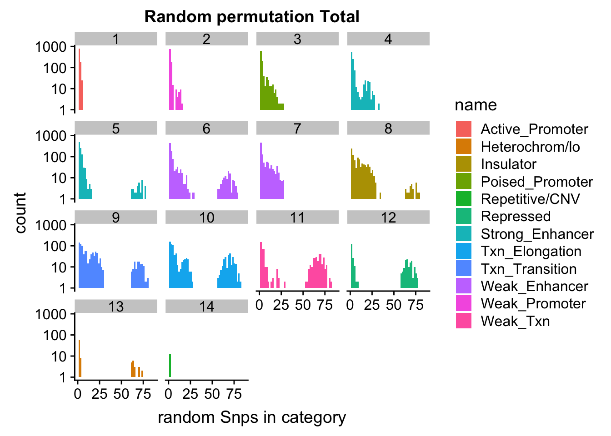

Last updated: 2018-11-12
workflowr checks: (Click a bullet for more information) ✔ R Markdown file: up-to-date
Great! Since the R Markdown file has been committed to the Git repository, you know the exact version of the code that produced these results.
✔ Environment: empty
Great job! The global environment was empty. Objects defined in the global environment can affect the analysis in your R Markdown file in unknown ways. For reproduciblity it’s best to always run the code in an empty environment.
✔ Seed:
set.seed(12345)
The command set.seed(12345) was run prior to running the code in the R Markdown file. Setting a seed ensures that any results that rely on randomness, e.g. subsampling or permutations, are reproducible.
✔ Session information: recorded
Great job! Recording the operating system, R version, and package versions is critical for reproducibility.
✔ Repository version: d08f3f9
wflow_publish or wflow_git_commit). workflowr only checks the R Markdown file, but you know if there are other scripts or data files that it depends on. Below is the status of the Git repository when the results were generated:
Ignored files:
Ignored: .DS_Store
Ignored: .Rhistory
Ignored: .Rproj.user/
Ignored: data/.DS_Store
Ignored: output/.DS_Store
Untracked files:
Untracked: KalistoAbundance18486.txt
Untracked: analysis/ncbiRefSeq_sm.sort.mRNA.bed
Untracked: analysis/snake.config.notes.Rmd
Untracked: analysis/verifyBAM.Rmd
Untracked: data/18486.genecov.txt
Untracked: data/APApeaksYL.total.inbrain.bed
Untracked: data/ChromHmmOverlap/
Untracked: data/GM12878.chromHMM.bed
Untracked: data/GM12878.chromHMM.txt
Untracked: data/NuclearApaQTLs.txt
Untracked: data/PeaksUsed/
Untracked: data/RNAkalisto/
Untracked: data/TotalApaQTLs.txt
Untracked: data/Totalpeaks_filtered_clean.bed
Untracked: data/YL-SP-18486-T-combined-genecov.txt
Untracked: data/YL-SP-18486-T_S9_R1_001-genecov.txt
Untracked: data/apaExamp/
Untracked: data/bedgraph_peaks/
Untracked: data/bin200.5.T.nuccov.bed
Untracked: data/bin200.Anuccov.bed
Untracked: data/bin200.nuccov.bed
Untracked: data/clean_peaks/
Untracked: data/comb_map_stats.csv
Untracked: data/comb_map_stats.xlsx
Untracked: data/comb_map_stats_39ind.csv
Untracked: data/combined_reads_mapped_three_prime_seq.csv
Untracked: data/diff_iso_trans/
Untracked: data/ensemble_to_genename.txt
Untracked: data/example_gene_peakQuant/
Untracked: data/filtered_APApeaks_merged_allchrom_refseqTrans.closest2End.bed
Untracked: data/filtered_APApeaks_merged_allchrom_refseqTrans.closest2End.noties.bed
Untracked: data/first50lines_closest.txt
Untracked: data/gencov.test.csv
Untracked: data/gencov.test.txt
Untracked: data/gencov_zero.test.csv
Untracked: data/gencov_zero.test.txt
Untracked: data/gene_cov/
Untracked: data/joined
Untracked: data/leafcutter/
Untracked: data/merged_combined_YL-SP-threeprimeseq.bg
Untracked: data/mol_overlap/
Untracked: data/mol_pheno/
Untracked: data/nom_QTL/
Untracked: data/nom_QTL_opp/
Untracked: data/nom_QTL_trans/
Untracked: data/nuc6up/
Untracked: data/other_qtls/
Untracked: data/peakPerRefSeqGene/
Untracked: data/perm_QTL/
Untracked: data/perm_QTL_opp/
Untracked: data/perm_QTL_trans/
Untracked: data/reads_mapped_three_prime_seq.csv
Untracked: data/smash.cov.results.bed
Untracked: data/smash.cov.results.csv
Untracked: data/smash.cov.results.txt
Untracked: data/smash_testregion/
Untracked: data/ssFC200.cov.bed
Untracked: data/temp.file1
Untracked: data/temp.file2
Untracked: data/temp.gencov.test.txt
Untracked: data/temp.gencov_zero.test.txt
Untracked: output/picard/
Untracked: output/plots/
Untracked: output/qual.fig2.pdf
Unstaged changes:
Modified: analysis/28ind.peak.explore.Rmd
Modified: analysis/39indQC.Rmd
Modified: analysis/cleanupdtseq.internalpriming.Rmd
Modified: analysis/coloc_apaQTLs_protQTLs.Rmd
Modified: analysis/dif.iso.usage.leafcutter.Rmd
Modified: analysis/diff_iso_pipeline.Rmd
Modified: analysis/explore.filters.Rmd
Modified: analysis/flash2mash.Rmd
Modified: analysis/overlapMolQTL.Rmd
Modified: analysis/overlap_qtls.Rmd
Modified: analysis/peakOverlap_oppstrand.Rmd
Modified: analysis/pheno.leaf.comb.Rmd
Modified: analysis/swarmPlots_QTLs.Rmd
Modified: analysis/test.max2.Rmd
Modified: code/Snakefile
| File | Version | Author | Date | Message |
|---|---|---|---|---|
| Rmd | d08f3f9 | Briana Mittleman | 2018-11-12 | fix code for no sig permutations |
| html | 83f1b14 | Briana Mittleman | 2018-11-08 | Build site. |
| Rmd | ab79f33 | Briana Mittleman | 2018-11-08 | add enrichment analysis (messed up perm) |
| html | 19b98b3 | Briana Mittleman | 2018-11-07 | Build site. |
| Rmd | 70cf09c | Briana Mittleman | 2018-11-07 | add perm res |
| html | 2ec5ffd | Briana Mittleman | 2018-11-07 | Build site. |
| Rmd | 962e39b | Briana Mittleman | 2018-11-07 | move chromhmm analysis to its own analysis |
Librarys
library(workflowr)This is workflowr version 1.1.1
Run ?workflowr for help getting startedlibrary(reshape2)
library(tidyverse)── Attaching packages ─────────────────────────────────────────────────────────────────────────── tidyverse 1.2.1 ──✔ ggplot2 3.0.0 ✔ purrr 0.2.5
✔ tibble 1.4.2 ✔ dplyr 0.7.6
✔ tidyr 0.8.1 ✔ stringr 1.3.1
✔ readr 1.1.1 ✔ forcats 0.3.0── Conflicts ────────────────────────────────────────────────────────────────────────────── tidyverse_conflicts() ──
✖ dplyr::filter() masks stats::filter()
✖ dplyr::lag() masks stats::lag()library(VennDiagram)Loading required package: gridLoading required package: futile.loggerlibrary(data.table)
Attaching package: 'data.table'The following objects are masked from 'package:dplyr':
between, first, lastThe following object is masked from 'package:purrr':
transposeThe following objects are masked from 'package:reshape2':
dcast, meltlibrary(ggpubr)Loading required package: magrittr
Attaching package: 'magrittr'The following object is masked from 'package:purrr':
set_namesThe following object is masked from 'package:tidyr':
extract
Attaching package: 'ggpubr'The following object is masked from 'package:VennDiagram':
rotatelibrary(cowplot)
Attaching package: 'cowplot'The following object is masked from 'package:ggpubr':
get_legendThe following object is masked from 'package:ggplot2':
ggsaveI am continuing the analysis I started in the characterization of the APAqtl analysis. I need to run permutations to enrichment statistics.
I created the significant SNP files in the Characterize Total APAqtl analysis analysis.
chromHmm=read.table("../data/ChromHmmOverlap/chromHMM_regions.txt", col.names = c("number", "name"), stringsAsFactors = F)
NuclearOverlapHMM=read.table("../data/ChromHmmOverlap/Nuc_overlapHMM.bed", col.names=c("chrom", "start", "end", "sid", "significance", "strand", "number"))
NuclearOverlapHMM$number=as.integer(NuclearOverlapHMM$number)
NuclearOverlapHMM_names=NuclearOverlapHMM %>% left_join(chromHmm, by="number")NuclearOverlapHMM_names$number=as.character(NuclearOverlapHMM_names$number)
ggplot(NuclearOverlapHMM_names, aes(x=number, fill=name)) + geom_bar() + labs(title="ChromHMM labels for Nuclear APAQtls" , y="Number of SNPs", x="Region")+theme(axis.text.x = element_text(angle = 90, hjust = 1))| Version | Author | Date |
|---|---|---|
| 83f1b14 | Briana Mittleman | 2018-11-08 |
| 2ec5ffd | Briana Mittleman | 2018-11-07 |
Evaluate results for total:
TotalOverlapHMM=read.table("../data/ChromHmmOverlap/Tot_overlapHMM.bed", col.names=c("chrom", "start", "end", "sid", "significance", "strand", "number"))
TotalOverlapHMM_names=TotalOverlapHMM %>% left_join(chromHmm, by="number")TotalOverlapHMM_names$number=as.character(TotalOverlapHMM_names$number)
ggplot(TotalOverlapHMM_names, aes(x=number, fill=name)) + geom_bar() + labs(title="ChromHMM labels for Total APAQtls" , y="Number of SNPs", x="Region")+theme(axis.text.x = element_text(angle = 90, hjust = 1))| Version | Author | Date |
|---|---|---|
| 83f1b14 | Briana Mittleman | 2018-11-08 |
| 2ec5ffd | Briana Mittleman | 2018-11-07 |
I do still need to get 880 random snps.
shuf -n 880 /project2/gilad/briana/threeprimeseq/data/nominal_APAqtl_trans/filtered_APApeaks_merged_allchrom_refseqGenes_pheno_Nuclear_NomRes.txt > /project2/gilad/briana/threeprimeseq/data/nominal_APAqtl_trans/randomSnps/ApaQTL_nuclear_Random880.txt
Run QTLNOMres2SigSNPbed.py with nuclear 880 and sort output
import pybedtools
RANDnuc=pybedtools.BedTool('/project2/gilad/briana/threeprimeseq/data/nominal_APAqtl_trans/randomSnps/ApaQTL_nuclear_Random880.sort.bed')
hmm=pybedtools.BedTool("/project2/gilad/briana/genome_anotation_data/GM12878.chromHMM.sort.bed")
#map hmm to snps
NucRnad_overlapHMM=RANDnuc.map(hmm, c=4)
#save results
NucRnad_overlapHMM.saveas("/project2/gilad/briana/threeprimeseq/data/nominal_APAqtl_trans/randomSnps/ApaQTL_nuclear_Random_overlapHMM.bed")
NuclearRandOverlapHMM=read.table("../data/ChromHmmOverlap/ApaQTL_nuclear_Random_overlapHMM.bed", col.names=c("chrom", "start", "end", "sid", "significance", "strand", "number"))
NuclearRandOverlapHMM_names=NuclearRandOverlapHMM %>% left_join(chromHmm, by="number")ggplot(NuclearRandOverlapHMM_names, aes(x=name)) + geom_bar() + labs(title="ChromHMM labels for Nuclear APAQtls (Random)" , y="Number of SNPs", x="Region")+theme(axis.text.x = element_text(angle = 90, hjust = 1))| Version | Author | Date |
|---|---|---|
| 2ec5ffd | Briana Mittleman | 2018-11-07 |
To put this on the same plot I can count the number in each then plot them next to eachother.
random_perChromHMM_nuc=NuclearRandOverlapHMM_names %>% group_by(name) %>% summarise(Random=n())
sig_perChromHMM_nuc= NuclearOverlapHMM_names %>% group_by(name) %>% summarise(Nuclear_QTLs=n())
perChrommHMM_nuc=random_perChromHMM_nuc %>% full_join(sig_perChromHMM_nuc, by="name", ) %>% replace_na(list(Random=0,Total_QTLs=0))
perChrommHMM_nuc_melt=melt(perChrommHMM_nuc, id.vars="name")
names(perChrommHMM_nuc_melt)=c("Region","Set", "N_Snps" )chromenrichNuclearplot=ggplot(perChrommHMM_nuc_melt, aes(x=Region, y=N_Snps, by=Set, fill=Set)) + geom_bar(position="dodge", stat="identity") +theme(axis.text.x = element_text(angle = 90, hjust = 1)) + labs(title="Enrichment of Nuclear QTLs by chromatin region", y="Number of Snps", x="Chromatin Region") + scale_fill_brewer(palette="Paired")
chromenrichNuclearplot| Version | Author | Date |
|---|---|---|
| 2ec5ffd | Briana Mittleman | 2018-11-07 |
ggsave("../output/plots/ChromHmmEnrich_Nuclear.png", chromenrichNuclearplot)Saving 7 x 5 in imageI want to make a plot with the enrichment by fraction. I am first going to get an enrichemnt score for each bin naively by looking at the QTL/random in each category.
#perChrommHMM_nuc$Random= as.integer(perChrommHMM_nuc$Random)
#perChrommHMM_nuc_enr=perChrommHMM_nuc %>% mutate(Nuclear=Nuclear_QTLs-Random)
#perChrommHMM_tot_enr=read.table("../data/ChromHmmOverlap/perChrommHMM_Total_enr.txt",stringsAsFactors = F,header = T)#allenrich=perChrommHMM_tot_enr %>% inner_join(perChrommHMM_nuc_enr, by="name") %>% select(name, Total, Nuclear)
#allenrich_melt=melt(allenrich, id.vars="name")plot it
#chromenrichBoth=ggplot(allenrich_melt, aes(x=name, by=variable, y=value, fill=variable)) + geom_bar(stat="identity", position = "dodge") + theme(axis.text.x = element_text(angle = 90, hjust = 1)) + labs(title="QTL-Random for each bin by fraction", y="Num QTL SNPs - Num Random SNPs") + scale_fill_manual(values=c("darkviolet", "deepskyblue3"))
#ggsave("../output/plots/ChromHmmEnrich_BothFrac.png", chromenrichBoth)I want to permute the background snps so i can get a better expectation. To do this I need to chose random lines from the nominal file, change the lines to snp format, overlap with HMM, count how many are in each category, and append the list to a dataframe that is category by permuation.
DO this for total first (118 snps)
total_random118_chromHmm.sh
#!/bin/bash
#SBATCH --job-name=total_random118_chromHmm_f
#SBATCH --account=pi-yangili1
#SBATCH --time=36:00:00
#SBATCH --output=total_random118_chromHmm_f.out
#SBATCH --error=total_random118_chromHmm_f.err
#SBATCH --partition=bigmem2
#SBATCH --mem=200G
#SBATCH --mail-type=END
module load Anaconda3
source activate three-prime-env
#test with 2 permutations then make it 1000
#choose random res
for i in {1..1000};
do
shuf -n 118 /project2/gilad/briana/threeprimeseq/data/nominal_APAqtl_trans/filtered_APApeaks_merged_allchrom_refseqGenes_pheno_Total_NomRes.txt > /project2/gilad/briana/threeprimeseq/data/random_QTLsnps/Total/randomRes_Total_118_${i}.txt
done
#make random
for i in {1..1000};
do
python randomRes2SNPbed.py Total 118 ${i}
done
#cat res together
cat /project2/gilad/briana/threeprimeseq/data/random_QTLsnps/Total/snp_bed/* > /project2/gilad/briana/threeprimeseq/data/random_QTLsnps/Total/snp_bed_all/randomRes_Total_118_ALLperm.bed
#sort full file
sort -k1,1 -k2,2n /project2/gilad/briana/threeprimeseq/data/random_QTLsnps/Total/snp_bed_all/randomRes_Total_118_ALLperm.bed > /project2/gilad/briana/threeprimeseq/data/random_QTLsnps/Total/snp_bed_all/randomRes_Total_118_ALLperm.sort.bed
#hmm overlap
python overlap_chromHMM.py Total 118 1000
#Next I would pull this into R to do the group by and average!
pull_random_lines.py
def main(inFile, outFile ,nsamp):
nom_res= pd.read_csv(inFile, sep="\t", encoding="utf-8",header=None)
out=open(outFile, "w")
sample=nom_res.sample(nsamp)
sample.to_csv(out, sep="\t", encoding='utf-8', index=False, header=F)
out.close()
if __name__ == "__main__":
import sys
import pandas as pd
fraction = sys.argv[1]
nsamp=sys.argv[2]
nsamp=int(nsamp)
iter=sys.argv[3]
inFile = "/project2/gilad/briana/threeprimeseq/data/nominal_APAqtl_trans/filtered_APApeaks_merged_allchrom_refseqGenes_pheno_%s_NomRes.txt"%(fraction)
outFile = "/project2/gilad/briana/threeprimeseq/data/random_QTLsnps/%s/randomRes_%s_%d_%s.txt"%(fraction,fraction, nsamp, iter)
main(inFile, outFile, nsamp)randomRes2SNPbed.py
def main(inFile, outFile):
fout=open(outFile, "w")
fin=open(inFile, "r")
for ln in fin:
pid, sid, dist, pval, slope = ln.split()
chrom, pos= sid.split(":")
name=sid
start= int(pos)-1
end=int(pos)
strand=pid.split(":")[3].split("_")[1]
pval=float(pval)
fout.write("%s\t%s\t%s\t%s\t%s\t%s\n"%(chrom, start, end, name, pval, strand))
fout.close()
if __name__ == "__main__":
import sys
fraction=sys.argv[1]
nsamp=sys.argv[2]
nsamp=int(nsamp)
iter=sys.argv[3]
inFile = "/project2/gilad/briana/threeprimeseq/data/random_QTLsnps/%s/randomRes_%s_%d_%s.txt"%(fraction,fraction, nsamp, iter)
outFile= "/project2/gilad/briana/threeprimeseq/data/random_QTLsnps/%s/snp_bed/randomRes_%s_%d_%s.bed"%(fraction,fraction, nsamp, iter)
main(inFile,outFile) overlap_chromHMM.py
def main(inFile, outFile):
rand=pybedtools.BedTool(inFile)
hmm=pybedtools.BedTool("/project2/gilad/briana/genome_anotation_data/GM12878.chromHMM.sort.bed")
#map hmm to snps
Rand_overlapHMM=rand.map(hmm, c=4)
#save results
Rand_overlapHMM.saveas(outFile)
if __name__ == "__main__":
import sys
import pandas as pd
import pybedtools
fraction=sys.argv[1]
nsamp=sys.argv[2]
niter=sys.argv[3]
inFile = "/project2/gilad/briana/threeprimeseq/data/random_QTLsnps/%s/snp_bed_all/randomRes_%s_%s_ALLperm.sort.bed"%(fraction,fraction, nsamp)
outFile= "/project2/gilad/briana/threeprimeseq/data/random_QTLsnps/%s/chromHMM_overlap/randomres_overlapChromHMM_%s_%s_%s.txt"%(fraction,fraction,nsamp, niter)
main(inFile,outFile)
*Nuclear 880
nuclear_random880_chromHmm.sh
#!/bin/bash
#SBATCH --job-name=nuc_random880_chromHmm
#SBATCH --account=pi-yangili1
#SBATCH --time=36:00:00
#SBATCH --output=nuc_random880_chromHmm.out
#SBATCH --error=nuc_random880_chromHmm.err
#SBATCH --partition=bigmem2
#SBATCH --mem=200G
#SBATCH --mail-type=END
module load Anaconda3
source activate three-prime-env
#test with 2 permutations then make it 1000
#choose random res
for i in {1..1000};
do
shuf -n 880 /project2/gilad/briana/threeprimeseq/data/nominal_APAqtl_trans/filtered_APApeaks_merged_allchrom_refseqGenes_pheno_Nuclear_NomRes.txt > /project2/gilad/briana/threeprimeseq/data/random_QTLsnps/Nuclear/randomRes_Nuclear_880_${i}.txt
done
#make random
for i in {1..1000};
do
python randomRes2SNPbed.py Nuclear 880 ${i}
done
#cat res together
cat /project2/gilad/briana/threeprimeseq/data/random_QTLsnps/Nuclear/snp_bed/* > /project2/gilad/briana/threeprimeseq/data/random_QTLsnps/Nuclear/snp_bed_all/randomRes_Nuclear_880_ALLperm.bed
#sort full file
sort -k1,1 -k2,2n /project2/gilad/briana/threeprimeseq/data/random_QTLsnps/Nuclear/snp_bed_all/randomRes_Nuclear_880_ALLperm.bed > /project2/gilad/briana/threeprimeseq/data/random_QTLsnps/Nuclear/snp_bed_all/randomRes_Nuclear_880_ALLperm.sort.bed
#hmm overlap
python overlap_chromHMM.py Nuclear 880 1000
#Next I would pull this into R to do the group by and average!
Perm didnt finish: do this with less (824)
nuclear_random880_chromHmm.sm.sh
#!/bin/bash
#SBATCH --job-name=nuc_random880_chromHmm_sm
#SBATCH --account=pi-yangili1
#SBATCH --time=24:00:00
#SBATCH --output=nuc_random880_chromHmm_sm.out
#SBATCH --error=nuc_random880_chromHmm_sm.err
#SBATCH --partition=bigmem2
#SBATCH --mem=100G
#SBATCH --mail-type=END
module load Anaconda3
source activate three-prime-env
#make random
for i in {1..824};
do
python randomRes2SNPbed.py Nuclear 880 ${i}
done
#cat res together
cat /project2/gilad/briana/threeprimeseq/data/random_QTLsnps/Nuclear/snp_bed/* > /project2/gilad/briana/threeprimeseq/data/random_QTLsnps/Nuclear/snp_bed_all/randomRes_Nuclear_880_ALLperm.bed
#sort full file
sort -k1,1 -k2,2n /project2/gilad/briana/threeprimeseq/data/random_QTLsnps/Nuclear/snp_bed_all/randomRes_Nuclear_880_ALLperm.bed > /project2/gilad/briana/threeprimeseq/data/random_QTLsnps/Nuclear/snp_bed_all/randomRes_Nuclear_880_ALLperm.sort.bed
#hmm overlap
python overlap_chromHMM.py Nuclear 880 824I need a way to make this more efficient to run 1000 permutations. Here I will look at the results from the 824 permutations.
nuclear_perm824= read.table("../data/ChromHmmOverlap/randomres_overlapChromHMM_Nuclear_880_824.txt", col.names=c("chrom", "start", "end", "sid", "significance", "strand", "number"),stringsAsFactors = F, na.strings = "NA")
#924 snps are not annoated
nuclear_perm824$number=as.integer(as.factor(nuclear_perm824$number))
nuclear_perm824_names=nuclear_perm824 %>% left_join(chromHmm, by="number")
random_perChromHMM_nuc_PERM=nuclear_perm824_names %>% group_by(name) %>% summarise(Random=n()) %>% mutate(Random_perm=Random/824) %>% replace_na(list(name="No_annoation"))
perChrommHMM_nuc_withPerm=random_perChromHMM_nuc_PERM %>% full_join(sig_perChromHMM_nuc, by="name" ) %>% replace_na(list(Random=0,Nuclear_QTLs=0)) %>% select(name,Random_perm, Nuclear_QTLs)
perChrommHMM_nuc_withPerm_melt=melt(perChrommHMM_nuc_withPerm, id.vars="name")
names(perChrommHMM_nuc_withPerm_melt)=c("Region","Set", "N_Snps" )
ggplot(perChrommHMM_nuc_withPerm_melt, aes(x=Region, y=N_Snps, by=Set, fill=Set)) + geom_bar(position="dodge", stat="identity") +theme(axis.text.x = element_text(angle = 90, hjust = 1)) + labs(title="Enrichment of Nuclear QTLs by chromatin region", y="Number of Snps", x="Chromatin Region") + scale_fill_brewer(palette="Paired")| Version | Author | Date |
|---|---|---|
| 2ec5ffd | Briana Mittleman | 2018-11-07 |
Enrichment is the actual/random:
perChrommHMM_nuc_withPerm_enrich = perChrommHMM_nuc_withPerm %>% mutate(Nuclear_Enrichment=(Nuclear_QTLs-Random_perm)/Random_perm, chiSq=(Nuclear_QTLs-Random_perm)^2/Random_perm)
ggplot(perChrommHMM_nuc_withPerm_enrich, aes(x=name, y=Nuclear_Enrichment)) + geom_bar(stat="identity",fill="deepskyblue3")+ theme(axis.text.x = element_text(angle = 90, hjust = 1)) + labs(title="ChromHMM Enrichment of Nuclear ApaQTLs \n over 824 Random Permuations", x="Region")| Version | Author | Date |
|---|---|---|
| 2ec5ffd | Briana Mittleman | 2018-11-07 |
ggplot(perChrommHMM_nuc_withPerm_enrich, aes(x=name, y=chiSq)) + geom_bar(stat="identity",fill="deepskyblue3")+ theme(axis.text.x = element_text(angle = 90, hjust = 1)) + labs(title="ChromHMM ChiSq of Nuclear ApaQTLs \n over 824 Random Permuations", x="Region") | Version | Author | Date |
|---|---|---|
| 2ec5ffd | Briana Mittleman | 2018-11-07 |
To parallelize this I will run the permutations in 4 bash scripts:
nuc_random880_chromHmm_set1.sh
#!/bin/bash
#SBATCH --job-name=nuc_random880_chromHmm_set1
#SBATCH --account=pi-yangili1
#SBATCH --time=24:00:00
#SBATCH --output=nuc_random880_chromHmm_set1.out
#SBATCH --error=nuc_random880_chromHmm_set1.err
#SBATCH --partition=bigmem2
#SBATCH --mem=100G
#SBATCH --mail-type=END
module load Anaconda3
source activate three-prime-env
#make random
for i in {1..250};
do
shuf -n 880 /project2/gilad/briana/threeprimeseq/data/nominal_APAqtl_trans/filtered_APApeaks_merged_allchrom_refseqGenes_pheno_Nuclear_NomRes.txt > /project2/gilad/briana/threeprimeseq/data/random_QTLsnps/Nuclear/randomRes_Nuclear_880_${i}.txt
done
nuc_random880_chromHmm_set2.sh
#!/bin/bash
#SBATCH --job-name=nuc_random880_chromHmm_set2
#SBATCH --account=pi-yangili1
#SBATCH --time=24:00:00
#SBATCH --output=nuc_random880_chromHmm_set2.out
#SBATCH --error=nuc_random880_chromHmm_set2.err
#SBATCH --partition=bigmem2
#SBATCH --mem=200G
#SBATCH --mail-type=END
module load Anaconda3
source activate three-prime-env
#make random
for i in {251..500};
do
shuf -n 880 /project2/gilad/briana/threeprimeseq/data/nominal_APAqtl_trans/filtered_APApeaks_merged_allchrom_refseqGenes_pheno_Nuclear_NomRes.txt > /project2/gilad/briana/threeprimeseq/data/random_QTLsnps/Nuclear/randomRes_Nuclear_880_${i}.txt
done
nuc_random880_chromHmm_set3.sh
#!/bin/bash
#SBATCH --job-name=nuc_random880_chromHmm_set3
#SBATCH --account=pi-yangili1
#SBATCH --time=24:00:00
#SBATCH --output=nuc_random880_chromHmm_set3.out
#SBATCH --error=nuc_random880_chromHmm_set3.err
#SBATCH --partition=bigmem2
#SBATCH --mem=200G
#SBATCH --mail-type=END
module load Anaconda3
source activate three-prime-env
#make random
for i in {501..750};
do
shuf -n 880 /project2/gilad/briana/threeprimeseq/data/nominal_APAqtl_trans/filtered_APApeaks_merged_allchrom_refseqGenes_pheno_Nuclear_NomRes.txt > /project2/gilad/briana/threeprimeseq/data/random_QTLsnps/Nuclear/randomRes_Nuclear_880_${i}.txt
done
nuc_random880_chromHmm_set4.sh
#!/bin/bash
#SBATCH --job-name=nuc_random880_chromHmm_set4
#SBATCH --account=pi-yangili1
#SBATCH --time=24:00:00
#SBATCH --output=nuc_random880_chromHmm_set4.out
#SBATCH --error=nuc_random880_chromHmm_set4.err
#SBATCH --partition=bigmem2
#SBATCH --mem=200G
#SBATCH --mail-type=END
module load Anaconda3
source activate three-prime-env
#make random
for i in {751..1000};
do
shuf -n 880 /project2/gilad/briana/threeprimeseq/data/nominal_APAqtl_trans/filtered_APApeaks_merged_allchrom_refseqGenes_pheno_Nuclear_NomRes.txt > /project2/gilad/briana/threeprimeseq/data/random_QTLsnps/Nuclear/randomRes_Nuclear_880_${i}.txt
done
Same for total:
total_random118_chromHmm_set1.sh
#!/bin/bash
#SBATCH --job-name=total_random118_chromHmm_set1
#SBATCH --account=pi-yangili1
#SBATCH --time=36:00:00
#SBATCH --output=total_random118_chromHmm_set1.out
#SBATCH --error=total_random118_chromHmm_set1.err
#SBATCH --partition=bigmem2
#SBATCH --mem=200G
#SBATCH --mail-type=END
module load Anaconda3
source activate three-prime-env
#test with 2 permutations then make it 1000
#choose random res
for i in {1..250};
do
shuf -n 118 /project2/gilad/briana/threeprimeseq/data/nominal_APAqtl_trans/filtered_APApeaks_merged_allchrom_refseqGenes_pheno_Total_NomRes.txt > /project2/gilad/briana/threeprimeseq/data/random_QTLsnps/Total/randomRes_Total_118_${i}.txt
done
total_random118_chromHmm_set2.sh
#!/bin/bash
#SBATCH --job-name=total_random118_chromHmm_set2
#SBATCH --account=pi-yangili1
#SBATCH --time=36:00:00
#SBATCH --output=total_random118_chromHmm_set2.out
#SBATCH --error=total_random118_chromHmm_set2.err
#SBATCH --partition=bigmem2
#SBATCH --mem=200G
#SBATCH --mail-type=END
module load Anaconda3
source activate three-prime-env
#test with 2 permutations then make it 1000
#choose random res
for i in {251..500};
do
shuf -n 118 /project2/gilad/briana/threeprimeseq/data/nominal_APAqtl_trans/filtered_APApeaks_merged_allchrom_refseqGenes_pheno_Total_NomRes.txt > /project2/gilad/briana/threeprimeseq/data/random_QTLsnps/Total/randomRes_Total_118_${i}.txt
done
total_random118_chromHmm_set4.sh
#!/bin/bash
#SBATCH --job-name=total_random118_chromHmm_set4
#SBATCH --account=pi-yangili1
#SBATCH --time=36:00:00
#SBATCH --output=total_random118_chromHmm_set4.out
#SBATCH --error=total_random118_chromHmm_set4.err
#SBATCH --partition=bigmem2
#SBATCH --mem=200G
#SBATCH --mail-type=END
module load Anaconda3
source activate three-prime-env
#test with 2 permutations then make it 1000
#choose random res
for i in {751..1000};
do
shuf -n 118 /project2/gilad/briana/threeprimeseq/data/nominal_APAqtl_trans/filtered_APApeaks_merged_allchrom_refseqGenes_pheno_Total_NomRes.txt > /project2/gilad/briana/threeprimeseq/data/random_QTLsnps/Total/randomRes_Total_118_${i}.txt
done
I want to turn each of these into snp files:
randomLines2Snp.sh
#!/bin/bash
#SBATCH --job-name=randomLines2Snp
#SBATCH --account=pi-yangili1
#SBATCH --time=36:00:00
#SBATCH --output=randomLines2Snp.out
#SBATCH --error=randomLines2Snp.err
#SBATCH --partition=broadwl
#SBATCH --mem=50G
#SBATCH --mail-type=END
module load Anaconda3
source activate three-prime-env
#make random
for i in {1..1000};
do
python randomRes2SNPbed.py Nuclear 880 ${i}
done
#make random
for i in {1..1000};
do
python randomRes2SNPbed.py Total 118 ${i}
done Next step is the overlap. I want this to run on each seperatly.
sortRandomSnps.sh
#!/bin/bash
#SBATCH --job-name=sortRandomSnps
#SBATCH --account=pi-yangili1
#SBATCH --time=36:00:00
#SBATCH --output=sortRandomSnps.out
#SBATCH --error=sortRandomSnps.err
#SBATCH --partition=broadwl
#SBATCH --mem=50G
#SBATCH --mail-type=END
module load Anaconda3
source activate three-prime-env
for i in $(ls /project2/gilad/briana/threeprimeseq/data/random_QTLsnps/Nuclear/snp_bed/);
do
sort -k1,1 -k2,2n /project2/gilad/briana/threeprimeseq/data/random_QTLsnps/Nuclear/snp_bed/$i > /project2/gilad/briana/threeprimeseq/data/random_QTLsnps/Nuclear/snp_bed_sort/$i.sort.bed
done
for i in $(ls /project2/gilad/briana/threeprimeseq/data/random_QTLsnps/Total/snp_bed/);
do
sort -k1,1 -k2,2n /project2/gilad/briana/threeprimeseq/data/random_QTLsnps/Total/snp_bed/$i > /project2/gilad/briana/threeprimeseq/data/random_QTLsnps/Total/snp_bed_sort/$i.sort.bed
done
Rewrite overlap with ChromHMM script to do it on each file seperatly.
overlap_chromHMM_sepfiles.py
def main(inFile, outFile):
rand=pybedtools.BedTool(inFile)
hmm=pybedtools.BedTool("/project2/gilad/briana/genome_anotation_data/GM12878.chromHMM.sort.bed")
#map hmm to snps
Rand_overlapHMM=rand.map(hmm, c=4)
#save results
Rand_overlapHMM.saveas(outFile)
if __name__ == "__main__":
import sys
import pandas as pd
import pybedtools
fraction=sys.argv[1]
nsamp=sys.argv[2]
niter=sys.argv[3]
#which itteration we are on
inFile ="/project2/gilad/briana/threeprimeseq/data/random_QTLsnps/%s/snp_bed_sort/randomRes_%s_%s_%s.bed.sort.bed"%(fraction,fraction, nsamp, iter)
outFile= "/project2/gilad/briana/threeprimeseq/data/random_QTLsnps/%s/chromHMM_overlap/randomres_overlapChromHMM_%s_%s_%s.txt"%(fraction,fraction,nsamp, niter)
main(inFile,outFile)overlap_chromHMM_sepfiles.sh
#!/bin/bash
#SBATCH --job-name=overlap_chromHMM_sepfiles
#SBATCH --account=pi-yangili1
#SBATCH --time=36:00:00
#SBATCH --output=overlap_chromHMM_sepfiles.out
#SBATCH --error=overlap_chromHMM_sepfiles.err
#SBATCH --partition=broadwl
#SBATCH --mem=50G
#SBATCH --mail-type=END
module load Anaconda3
source activate three-prime-env
for i in {1..1000};
do
python overlap_chromHMM_sepfiles.py Nuclear 880 $i
done
for i in {1..1000};
do
python overlap_chromHMM_sepfiles.py Total 118 $i
doneI will next make an R script that will take in each file and perform the groupby command to get the number of snps in each group.
groupRandomByChromHMM.R
#!/bin/rscripts
# usage: groupRandomByChromHMM.R -f infile -o outfile
#this file will take any of the itterations and output a file with chrom hmm number, name, numberof snps
library(optparse)
library(dplyr)
library(tidyr)
library(ggplot2)
library(readr)
option_list = list(
make_option(c("-f", "--file"), action="store", default=NA, type='character',
help="input coverage file"),
make_option(c("-o", "--output"), action="store", default=NA, type='character',
help="output file")
)
opt_parser <- OptionParser(option_list=option_list)
opt <- parse_args(opt_parser)
#interrupt execution if no file is supplied
if (is.null(opt$file)){
print_help(opt_parser)
stop("Need input file", call.=FALSE)
}
if (is.null(opt$output)){
print_help(opt_parser)
stop("Need output file", call.=FALSE)
}
randomSNPS=read.table(opt$file, col.names=c("chrom", "start", "end", "sid", "significance", "strand", "number"),stringsAsFactors = F, na.strings = "NA")
hmm_names=read.table("/project2/gilad/briana/genome_anotation_data/chromHMM_regions.txt", col.names = c("number", "name"),stringsAsFactors=F)
randomSNPS$number=as.integer(as.factor(randomSNPS$number))
randomSNPS_names= randomSNPS %>% left_join(hmm_names, by="number")
#split the name of the file to get the iteration number
fileSplit=strsplit(opt$file, "/")[[1]][10]
iter.txt=strsplit(fileSplit, "_")[[1]][5]
iter=substr(iter.txt, 1, nchar(iter.txt)-4)
randomSNPS_names_grouped=randomSNPS_names %>% group_by(number) %>% summarise(!!iter:=n()) %>% replace_na(list(name="No_annotation")) %>% dplyr::select(number, !!iter)
hmm_names$number=as.character(hmm_names$number)
final=hmm_names %>% left_join(randomSNPS_names_grouped,by="number")
write.table(final,opt$output,quote=FALSE, col.names = T, row.names = F)groupRandomChromHMM.sh
#!/bin/bash
#SBATCH --job-name=groupRandomChromHMM
#SBATCH --account=pi-yangili1
#SBATCH --time=36:00:00
#SBATCH --output=groupRandomChromHMM.out
#SBATCH --error=groupRandomChromHMM.err
#SBATCH --partition=broadwl
#SBATCH --mem=50G
#SBATCH --mail-type=END
module load Anaconda3
source activate three-prime-env
for i in {1..1000};
do
Rscript groupRandomByChromHMM.R -f /project2/gilad/briana/threeprimeseq/data/random_QTLsnps/Nuclear/chromHMM_overlap/randomres_overlapChromHMM_Nuclear_880_${i}.txt -o /project2/gilad/briana/threeprimeseq/data/random_QTLsnps/Nuclear/chromHMM_overlap_group/randomres_overlapChromHMM_Nuclear_880_${i}_grouped.txt
done
for i in {1..1000};
do
Rscript groupRandomByChromHMM.R -f /project2/gilad/briana/threeprimeseq/data/random_QTLsnps/Total/chromHMM_overlap/randomres_overlapChromHMM_Total_118_${i}.txt -o /project2/gilad/briana/threeprimeseq/data/random_QTLsnps/Total/chromHMM_overlap_group/randomres_overlapChromHMM_Total_118_${i}_grouped.txt
doneOnce I have the results I will paste the third column of each file together
cut -d$' ' -f 1,2 randomres_overlapChromHMM_Nuclear_880_1_grouped.txt > Nuc_chromOverlap.txt
for i in {1..1000};
do
paste -d" " Nuc_chromOverlap.txt <(cut -d" " -f 3 randomres_overlapChromHMM_Nuclear_880_${i}_grouped.txt) > tmp
mv tmp Nuc_chromOverlap.txt
done
cut -d$' ' -f 1,2 randomres_overlapChromHMM_Total_118_99_grouped.txt> Tot_chromOverlap.txt
for i in {1..1000};
do
paste -d" " Tot_chromOverlap.txt <(cut -d" " -f 3 randomres_overlapChromHMM_Total_118_${i}_grouped.txt) > tmp
mv tmp Tot_chromOverlap.txt
done
There will be NAs in this file. I will turn them into 0s when I bring it in R.
Pull files onto computer:
/project2/gilad/briana/threeprimeseq/data/random_QTLsnps/Nuclear/chromHMM_overlap_group/Nuc_chromOverlap.txt /project2/gilad/briana/threeprimeseq/data/random_QTLsnps/Total/chromHMM_overlap_group/Tot_chromOverlap.txt
regions=c('Txn_Elongation','Weak_Txn','Repressed','Heterochrom/lo','Repetitive/CNV1','Repetitive/CNV2','Active_Promoter','Weak_Promoter','Poised_Promoter','Strong_Enhancer1','Strong_Enhancer2','Weak_Enhancer1','Weak_Enhancer2','Insulator','Txn_Transition')
permutationResTotal=read.table("../data/ChromHmmOverlap/Tot_chromOverlap.txt", header=T, stringsAsFactors = F)
permutationResTotal[is.na(permutationResTotal)] <- 0
permutationResTotal= as_data_frame(permutationResTotal)
permutationResTotal_noName=permutationResTotal[,3:ncol(permutationResTotal)]
totRand_mean=rowMeans(permutationResTotal_noName)/1000
permutationResNuclear=read.table("../data/ChromHmmOverlap/Nuc_chromOverlap.txt",header = T,stringsAsFactors = F)
permutationResNuclear[is.na(permutationResNuclear)] <- 0
permutationResNuclear_noName=permutationResNuclear[,3:ncol(permutationResNuclear)]
nucRand_mean=rowMeans(permutationResNuclear_noName)/1000allRand_mean_df= data.frame(cbind(regions,totRand_mean, nucRand_mean))
allRand_mean_df_melt=melt(allRand_mean_df, id.vars="regions")Warning: attributes are not identical across measure variables; they will
be droppedallRand_mean_df_melt$value= as.numeric(allRand_mean_df_melt$value)
ggplot(allRand_mean_df_melt, aes(y=value, x=regions, by=variable, fill=variable))+ geom_histogram(stat="identity", position="dodge") + theme(axis.text.x = element_text(angle = 90, hjust = 1))Warning: Ignoring unknown parameters: binwidth, bins, pad| Version | Author | Date |
|---|---|---|
| 19b98b3 | Briana Mittleman | 2018-11-07 |
I want to look at specific distributions:
permutationResTotal_melt= melt(permutationResTotal, id.vars=c("number", "name"))ggplot(permutationResTotal_melt, aes(x=value,fill=name)) + geom_histogram(bins=50) + facet_wrap(~number) + labs(x="N random Snps in category", title="Random permutation Total")| Version | Author | Date |
|---|---|---|
| 19b98b3 | Briana Mittleman | 2018-11-07 |
For nuclear:
permutationResNuclear_melt= melt(permutationResNuclear, id.vars=c("number", "name"))ggplot(permutationResNuclear_melt, aes(x=value,fill=name)) + geom_histogram(bins=50) + facet_wrap(~number) + labs(x="N random Snps in category", title="Random permutation Nuclear")| Version | Author | Date |
|---|---|---|
| 19b98b3 | Briana Mittleman | 2018-11-07 |
Try log scale:
I want to add horizontal line where the actual QTL number is.
ggplot(permutationResTotal_melt, aes(x=value,fill=name)) + geom_histogram(bins=50) + facet_wrap(~number) + scale_y_log10() + labs(x="random Snps in category", title="Random permutation Total")Warning: Transformation introduced infinite values in continuous y-axisWarning: Removed 448 rows containing missing values (geom_bar).| Version | Author | Date |
|---|---|---|
| 83f1b14 | Briana Mittleman | 2018-11-08 |
| 19b98b3 | Briana Mittleman | 2018-11-07 |
ggplot(permutationResNuclear_melt, aes(x=value,fill=name)) + geom_histogram(bins=50) + facet_wrap(~number) + scale_y_log10()+ labs(x="random Snps in category", title="Random permutation Nuclear")Warning: Transformation introduced infinite values in continuous y-axisWarning: Removed 631 rows containing missing values (geom_bar).| Version | Author | Date |
|---|---|---|
| 83f1b14 | Briana Mittleman | 2018-11-08 |
| 19b98b3 | Briana Mittleman | 2018-11-07 |
Try removing 0s:
permutationResTotal_melt_no0= permutationResTotal_melt %>% filter(value>0)
ggplot(permutationResTotal_melt_no0, aes(x=value,fill=name)) + geom_histogram(bins=50) + facet_wrap(~number)+ scale_y_log10()+ labs(x="random Snps in category", title="Random permutation Total")Warning: Transformation introduced infinite values in continuous y-axisWarning: Removed 407 rows containing missing values (geom_bar).
| Version | Author | Date |
|---|---|---|
| 83f1b14 | Briana Mittleman | 2018-11-08 |
| 19b98b3 | Briana Mittleman | 2018-11-07 |
permutationResNuclear_melt_no0= permutationResNuclear_melt %>% filter(value>0)
ggplot(permutationResNuclear_melt_no0, aes(x=value,fill=name)) + geom_histogram(bins=50) + facet_wrap(~number)+ scale_y_log10()+ labs(x="random Snps in category", title="Random permutation Nuclear")Warning: Transformation introduced infinite values in continuous y-axisWarning: Removed 630 rows containing missing values (geom_bar).| Version | Author | Date |
|---|---|---|
| 83f1b14 | Briana Mittleman | 2018-11-08 |
| 19b98b3 | Briana Mittleman | 2018-11-07 |
Look at enrichment by using the average
TotalPermMean=permutationResTotal_melt %>% group_by(number) %>% summarise(TotRandPerm=mean(value))
TotalPermMean$number=as.character(TotalPermMean$number)
NuclearPermMean=permutationResNuclear_melt %>% group_by(number) %>% summarise(NucRandPerm=mean(value))
NuclearPermMean$number=as.character(NuclearPermMean$number)Melt SNP values by name and number to get data in same format:
TotalOverlapHMM_names_melt=melt(TotalOverlapHMM_names, id.vars=c("number", "name"))%>% filter(variable=="sid") %>% group_by(number) %>% summarise(TotalQTL=n())Warning: attributes are not identical across measure variables; they will
be droppedTotalOverlapHMM_names_melt$number=as.character(TotalOverlapHMM_names_melt$number)
NuclearOverlapHMM_names_melt=melt(NuclearOverlapHMM_names, id.vars=c("number", "name")) %>% filter(variable=="sid") %>% group_by(number) %>% summarise(NucQTL=n())Warning: attributes are not identical across measure variables; they will
be droppedNuclearOverlapHMM_names_melt$number=as.character(NuclearOverlapHMM_names_melt$number)chromHmm$number=as.character(chromHmm$number)
TotalOverlapHMM_enrichment= TotalOverlapHMM_names_melt %>% full_join(TotalPermMean, by="number") %>% replace_na(list(TotalQTL=.00001)) %>% full_join(chromHmm, by="number")
TotalOverlapHMM_enrichment$TotalQTL=as.double(TotalOverlapHMM_enrichment$TotalQTL)
TotalOverlapHMM_enrichment = TotalOverlapHMM_enrichment %>% mutate(TotEnrich=(TotalQTL-TotRandPerm)/TotRandPerm)
NuclearOverlapHMM_enrichment=NuclearOverlapHMM_names_melt %>% full_join(NuclearPermMean, by="number")%>% full_join(chromHmm, by="number")
NuclearOverlapHMM_enrichment$NucQTL=as.double(NuclearOverlapHMM_enrichment$NucQTL)
NuclearOverlapHMM_enrichment=NuclearOverlapHMM_enrichment %>%mutate(NucEnrich=(NucQTL-NucRandPerm)/NucRandPerm)ggplot(NuclearOverlapHMM_enrichment, aes(y=NucEnrich, x=number, fill=name)) + geom_bar(stat="identity")| Version | Author | Date |
|---|---|---|
| 83f1b14 | Briana Mittleman | 2018-11-08 |
ggplot(TotalOverlapHMM_enrichment, aes(y=TotEnrich, x=number, fill=name)) + geom_bar(stat="identity")| Version | Author | Date |
|---|---|---|
| 83f1b14 | Briana Mittleman | 2018-11-08 |
Join together:
bothEnrich=NuclearOverlapHMM_enrichment %>% full_join(TotalOverlapHMM_enrichment, by=c("name", "number")) %>% select(number, name, NucEnrich,TotEnrich)
bothEnrich_melt=melt(bothEnrich, id.vars=c("number", "name"))ggplot(bothEnrich_melt, aes(x=number, by=variable, fill=name, y=value,col=variable)) + geom_bar(position = "dodge", stat = "identity",alpha=.5) + scale_color_manual(values=c("darkviolet", "deepskyblue3")) + labs(y="Enrichment from 1000 permutations", title="ChromHMM enrichment for \nTotal and Nuclear ApaQTLs",x="Region")| Version | Author | Date |
|---|---|---|
| 83f1b14 | Briana Mittleman | 2018-11-08 |
Look only at the interesting ones by subsetting:
bothEnrich_melt_filt=bothEnrich_melt %>% filter(str_detect(name,"Active_Promoter|Txn_Elongation|Weak_Txn|Heterochrom/lo|Weak_Promoter|Poised_Promoter|Txn_Transition"))
ggplot(bothEnrich_melt_filt, aes(x=name, by=variable, fill=variable, y=value))+ geom_bar(position = "dodge", stat = "identity") + scale_fill_manual(values=c("deepskyblue3","darkviolet")) + theme(axis.text.x = element_text(angle = 90, hjust = 1)) + labs(y="Enrichment", x="Category", title="ChromHMM categroies \n with oppositte Enrichemtn patterns")| Version | Author | Date |
|---|---|---|
| 83f1b14 | Briana Mittleman | 2018-11-08 |
The bimodal distributions may come from including both the significant and non significant genes in the test set. I need to remove all of the lines that come from a gene with a significant peak.
NucQTL_genes=read.table("../data/perm_QTL_trans/filtered_APApeaks_merged_allchrom_refseqGenes_pheno_Nuclear_transcript_permResBH.txt", stringsAsFactors = F, header=T) %>% mutate(sig=ifelse(-log10(bh)>=1, 1,0 )) %>% separate(pid, sep = ":", into=c("chr", "start", "end", "id")) %>% separate(id, sep = "_", into=c("gene", "strand", "peak")) %>% filter(sig==1) %>% select(gene) %>% distinct(gene)
#715 genes
#write this out as NucAPAGenes
write.table(NucQTL_genes, "../data/perm_QTL_trans/NucApaGenes.txt", row.names = F, col.names = F, quote=F)
TotQTL_genes=read.table("../data/perm_QTL_trans/filtered_APApeaks_merged_allchrom_refseqGenes_pheno_Total_transcript_permResBH.txt", stringsAsFactors = F, header=T) %>% mutate(sig=ifelse(-log10(bh)>=1, 1,0 )) %>% separate(pid, sep = ":", into=c("chr", "start", "end", "id")) %>% separate(id, sep = "_", into=c("gene", "strand", "peak")) %>% filter(sig==1) %>% select(gene) %>% distinct(gene)
#106 genes
#write out as TotAPAGenes
write.table(TotQTL_genes, "../data/perm_QTL_trans/TotApaGenes.txt", row.names = F, col.names = F, quote=F)I need to find a way to get rid of these from the files I cam pulling from.
/project2/gilad/briana/threeprimeseq/data/nominal_APAqtl_trans/filtered_APApeaks_merged_allchrom_refseqGenes_pheno_Nuclear_NomRes.txt
/project2/gilad/briana/threeprimeseq/data/nominal_APAqtl_trans/filtered_APApeaks_merged_allchrom_refseqGenes_pheno_Total_NomRes.txtI can create an python script to do this. I will need to seperate the first column and and only write the line out if the gene is in the apaGenes files I just created.
filterSigGenes.py
#python
#genes with sig ApaQTL
TotGenes=open("/project2/gilad/briana/threeprimeseq/data/random_QTLsnps/sig_genes/TotApaGenes.txt", "r")
NucGenes=open("/project2/gilad/briana/threeprimeseq/data/random_QTLsnps/sig_genes/NucApaGenes.txt", "r")
#nom res (with all snps tested)
NucRes=open("/project2/gilad/briana/threeprimeseq/data/nominal_APAqtl_trans/filtered_APApeaks_merged_allchrom_refseqGenes_pheno_Nuclear_NomRes.txt", "r")
TotRes=open("/project2/gilad/briana/threeprimeseq/data/nominal_APAqtl_trans/filtered_APApeaks_merged_allchrom_refseqGenes_pheno_Total_NomRes.txt", "r")
#output files:
Nuc_nonSig=open("/project2/gilad/briana/threeprimeseq/data/random_QTLsnps/nomRes_nonsig/NucTestedSnps_nonSigGenes.txt", "w")
Tot_nonSig=open("/project2/gilad/briana/threeprimeseq/data/random_QTLsnps/nomRes_nonsig/TotTestedSnps_nonSigGenes.txt", "w")
#convert genes to list
def file_to_list(file):
gene_list=[]
for ln in file:
gene=ln.strip()
gene_list.append(gene)
return(gene_list)
Tot_gene_list=file_to_list(TotGenes)
Nuc_gene_list=file_to_list(NucGenes)
#function that will take in the input, the list, and the output. I want to be able to run this function for total and nuclear
def filter(fin,fout, sigGenes):
for ln in fin:
gene=ln.split()[0].split(":")[3].split("_")[0]
if gene not in sigGenes:
fout.write(ln)
fout.close()
filter(NucRes,Nuc_nonSig,Nuc_gene_list)
filter(TotRes, Tot_nonSig, Tot_gene_list)
Call this in a bash script:
run_filterSigGenes.sh
#!/bin/bash
#SBATCH --job-name=run_filterSigGenes
#SBATCH --account=pi-yangili1
#SBATCH --time=36:00:00
#SBATCH --output=run_filterSigGenes.out
#SBATCH --error=run_filterSigGenes.err
#SBATCH --partition=broadwl
#SBATCH --mem=50G
#SBATCH --mail-type=END
module load Anaconda3
source activate three-prime-env
python filterSigGenes.py
nuc_random880_chromHmm_noSig_set1.sh
#!/bin/bash
#SBATCH --job-name=nuc_random880_chromHmm_noSig_set1
#SBATCH --account=pi-yangili1
#SBATCH --time=24:00:00
#SBATCH --output=nuc_random880_chromHmm_noSig_set1.out
#SBATCH --error=nuc_random880_chromHmm_noSig_set1.err
#SBATCH --partition=bigmem2
#SBATCH --mem=100G
#SBATCH --mail-type=END
module load Anaconda3
source activate three-prime-env
#make random
for i in {1..250};
do
shuf -n 880 /project2/gilad/briana/threeprimeseq/data/random_QTLsnps/nomRes_nonsig/NucTestedSnps_nonSigGenes.txt > /project2/gilad/briana/threeprimeseq/data/random_QTLsnps/Nuclear_noSig/randomRes_Nuclear_880_noSig_${i}.txt
done
nuc_random880_chromHmm_noSig_set2.sh
#!/bin/bash
#SBATCH --job-name=nuc_random880_chromHmm_noSig_set2
#SBATCH --account=pi-yangili1
#SBATCH --time=24:00:00
#SBATCH --output=nuc_random880_chromHmm_noSig_set2.out
#SBATCH --error=nuc_random880_chromHmm_noSig_set2.err
#SBATCH --partition=bigmem2
#SBATCH --mem=200G
#SBATCH --mail-type=END
module load Anaconda3
source activate three-prime-env
#make random
for i in {251..500};
do
shuf -n 880 /project2/gilad/briana/threeprimeseq/data/random_QTLsnps/nomRes_nonsig/NucTestedSnps_nonSigGenes.txt > /project2/gilad/briana/threeprimeseq/data/random_QTLsnps/Nuclear_noSig/randomRes_Nuclear_880_noSig_${i}.txt
done
nuc_random880_chromHmm_noSig_set3.sh
#!/bin/bash
#SBATCH --job-name=nuc_random880_chromHmm_noSig_set3
#SBATCH --account=pi-yangili1
#SBATCH --time=24:00:00
#SBATCH --output=nuc_random880_chromHmm_noSig_set3.out
#SBATCH --error=nuc_random880_chromHmm_noSig_set3.err
#SBATCH --partition=bigmem2
#SBATCH --mem=200G
#SBATCH --mail-type=END
module load Anaconda3
source activate three-prime-env
#make random
for i in {501..750};
do
shuf -n 880 /project2/gilad/briana/threeprimeseq/data/random_QTLsnps/nomRes_nonsig/NucTestedSnps_nonSigGenes.txt > /project2/gilad/briana/threeprimeseq/data/random_QTLsnps/Nuclear_noSig/randomRes_Nuclear_880_noSig_${i}.txt
done
nuc_random880_chromHmm_noSig_set4.sh
#!/bin/bash
#SBATCH --job-name=nuc_random880_chromHmm_noSig_set4
#SBATCH --account=pi-yangili1
#SBATCH --time=24:00:00
#SBATCH --output=nuc_random880_chromHmm_noSig_set4.out
#SBATCH --error=nuc_random880_chromHmm_noSig_set4.err
#SBATCH --partition=bigmem2
#SBATCH --mem=200G
#SBATCH --mail-type=END
module load Anaconda3
source activate three-prime-env
#make random
for i in {751..1000};
do
shuf -n 880 /project2/gilad/briana/threeprimeseq/data/random_QTLsnps/nomRes_nonsig/NucTestedSnps_nonSigGenes.txt > /project2/gilad/briana/threeprimeseq/data/random_QTLsnps/Nuclear_noSig/randomRes_Nuclear_880_noSig_${i}.txt
done
Same for total:
total_random118_chromHmm_noSig_set1.sh
#!/bin/bash
#SBATCH --job-name=total_random118_chromHmm_noSig_set1
#SBATCH --account=pi-yangili1
#SBATCH --time=36:00:00
#SBATCH --output=total_random118_chromHmm_noSig_set1.out
#SBATCH --error=total_random118_chromHmm_noSig_set1.err
#SBATCH --partition=bigmem2
#SBATCH --mem=200G
#SBATCH --mail-type=END
module load Anaconda3
source activate three-prime-env
#test with 2 permutations then make it 1000
#choose random res
for i in {1..250};
do
shuf -n 118 /project2/gilad/briana/threeprimeseq/data/random_QTLsnps/nomRes_nonsig/TotTestedSnps_nonSigGenes.txt > /project2/gilad/briana/threeprimeseq/data/random_QTLsnps/Total_noSig/randomRes_Total_118_noSig_${i}.txt
done
total_random118_chromHmm_noSig_set2.sh
#!/bin/bash
#SBATCH --job-name=total_random118_chromHmm_noSig_set2
#SBATCH --account=pi-yangili1
#SBATCH --time=36:00:00
#SBATCH --output=total_random118_chromHmm_noSig_set2.out
#SBATCH --error=total_random118_chromHmm_noSig_set2.err
#SBATCH --partition=bigmem2
#SBATCH --mem=200G
#SBATCH --mail-type=END
module load Anaconda3
source activate three-prime-env
#test with 2 permutations then make it 1000
#choose random res
for i in {251..500};
do
shuf -n 118 /project2/gilad/briana/threeprimeseq/data/random_QTLsnps/nomRes_nonsig/TotTestedSnps_nonSigGenes.txt > /project2/gilad/briana/threeprimeseq/data/random_QTLsnps/Total_noSig/randomRes_Total_118_noSig_${i}.txt
done
total_random118_chromHmm_noSig_set3.sh
#!/bin/bash
#SBATCH --job-name=total_random118_chromHmm_noSig_set3
#SBATCH --account=pi-yangili1
#SBATCH --time=36:00:00
#SBATCH --output=total_random118_chromHmm_noSig_set3.out
#SBATCH --error=total_random118_chromHmm_noSig_set3.err
#SBATCH --partition=bigmem2
#SBATCH --mem=200G
#SBATCH --mail-type=END
module load Anaconda3
source activate three-prime-env
#test with 2 permutations then make it 1000
#choose random res
for i in {501..750};
do
shuf -n 118 /project2/gilad/briana/threeprimeseq/data/random_QTLsnps/nomRes_nonsig/TotTestedSnps_nonSigGenes.txt > /project2/gilad/briana/threeprimeseq/data/random_QTLsnps/Total_noSig/randomRes_Total_118_noSig_${i}.txt
done
total_random118_chromHmm_noSig_set4.sh
#!/bin/bash
#SBATCH --job-name=total_random118_chromHmm_noSig_set4
#SBATCH --account=pi-yangili1
#SBATCH --time=36:00:00
#SBATCH --output=total_random118_chromHmm_noSig_set4.out
#SBATCH --error=total_random118_chromHmm_noSig_set4.err
#SBATCH --partition=bigmem2
#SBATCH --mem=200G
#SBATCH --mail-type=END
module load Anaconda3
source activate three-prime-env
#test with 2 permutations then make it 1000
#choose random res
for i in {751..1000};
do
shuf -n 118 /project2/gilad/briana/threeprimeseq/data/random_QTLsnps/nomRes_nonsig/TotTestedSnps_nonSigGenes.txt > /project2/gilad/briana/threeprimeseq/data/random_QTLsnps/Total_noSig/randomRes_Total_118_noSig_${i}.txt
done
This may not be enough. I may need to change this so it only has uniq snp. I could be sampling the same snps over an over.
Make these files into snp bed files:
randomRes2SNPbed_noSig.py
def main(inFile, outFile):
fout=open(outFile, "w")
fin=open(inFile, "r")
for ln in fin:
pid, sid, dist, pval, slope = ln.split()
chrom, pos= sid.split(":")
name=sid
start= int(pos)-1
end=int(pos)
strand=pid.split(":")[3].split("_")[1]
pval=float(pval)
fout.write("%s\t%s\t%s\t%s\t%s\t%s\n"%(chrom, start, end, name, pval, strand))
fout.close()
if __name__ == "__main__":
import sys
fraction=sys.argv[1]
nsamp=sys.argv[2]
nsamp=int(nsamp)
iter=sys.argv[3]
inFile = "/project2/gilad/briana/threeprimeseq/data/random_QTLsnps/%s_noSig/randomRes_%s_%d_noSig_%s.txt"%(fraction,fraction, nsamp, iter)
outFile= "/project2/gilad/briana/threeprimeseq/data/random_QTLsnps/%s_noSig/snp_bed_noSig/randomRes_%s_%d_noSig_%s.bed"%(fraction,fraction, nsamp, iter)
main(inFile,outFile)
randomLines2Snp_noSig.sh
#!/bin/bash
#SBATCH --job-name=randomLines2Snp_noSig
#SBATCH --account=pi-gilad
#SBATCH --time=36:00:00
#SBATCH --output=randomLines2Snp_noSig.out
#SBATCH --error=randomLines2Snp_noSig.err
#SBATCH --partition=gilad
#SBATCH --mem=50G
#SBATCH --mail-type=END
module load Anaconda3
source activate three-prime-env
#make random
for i in {1..1000};
do
python randomRes2SNPbed_noSig.py Nuclear 880 ${i}
done
#make random
for i in {1..1000};
do
python randomRes2SNPbed_noSig.py Total 118 ${i}
done sortRandomSnps_noSig.sh
#!/bin/bash
#SBATCH --job-name=sortRandomSnps_noSig
#SBATCH --account=pi-yangili1
#SBATCH --time=10:00:00
#SBATCH --output=sortRandomSnps_noSig.out
#SBATCH --error=sortRandomSnps_noSig.err
#SBATCH --partition=broadwl
#SBATCH --mem=50G
#SBATCH --mail-type=END
module load Anaconda3
source activate three-prime-env
for i in $(ls /project2/gilad/briana/threeprimeseq/data/random_QTLsnps/Nuclear_noSig/snp_bed_noSig/);
do
sort -k1,1 -k2,2n /project2/gilad/briana/threeprimeseq/data/random_QTLsnps/Nuclear_noSig/snp_bed_noSig/$i > /project2/gilad/briana/threeprimeseq/data/random_QTLsnps/Nuclear_noSig/snp_bed_sort_noSig/$i.sort.bed
done
for i in $(ls /project2/gilad/briana/threeprimeseq/data/random_QTLsnps/Total_noSig/snp_bed_noSig/);
do
sort -k1,1 -k2,2n /project2/gilad/briana/threeprimeseq/data/random_QTLsnps/Total_noSig/snp_bed_noSig/$i > /project2/gilad/briana/threeprimeseq/data/random_QTLsnps/Total_noSig/snp_bed_sort_noSig/$i.sort.bed
done
overlap_chromHMM_sepfiles_noSig.py
def main(inFile, outFile):
rand=pybedtools.BedTool(inFile)
hmm=pybedtools.BedTool("/project2/gilad/briana/genome_anotation_data/GM12878.chromHMM.sort.bed")
#map hmm to snps
Rand_overlapHMM=rand.map(hmm, c=4)
#save results
Rand_overlapHMM.saveas(outFile)
if __name__ == "__main__":
import sys
import pandas as pd
import pybedtools
fraction=sys.argv[1]
nsamp=sys.argv[2]
niter=sys.argv[3]
#which itteration we are on
inFile ="/project2/gilad/briana/threeprimeseq/data/random_QTLsnps/%s_noSig/snp_bed_sort_noSig/randomRes_%s_%s_%s.bed.sort.bed"%(fraction,fraction, nsamp, niter)
outFile= "/project2/gilad/briana/threeprimeseq/data/random_QTLsnps/%s_noSig/chromHMM_overlap/randomres_overlapChromHMM_%s_%s_%s.txt"%(fraction,fraction,nsamp, niter)
main(inFile,outFile)overlap_chromHMM_sepfiles_noSig.sh
#!/bin/bash
#SBATCH --job-name=overlap_chromHMM_sepfiles_noSig
#SBATCH --account=pi-yangili1
#SBATCH --time=10:00:00
#SBATCH --output=overlap_chromHMM_sepfiles_noSig.out
#SBATCH --error=overlap_chromHMM_sepfiles_noSig.err
#SBATCH --partition=broadwl
#SBATCH --mem=50G
#SBATCH --mail-type=END
module load Anaconda3
source activate three-prime-env
for i in {1..1000};
do
python overlap_chromHMM_sepfiles_noSig.py Nuclear 880 $i
done
for i in {1..1000};
do
python overlap_chromHMM_sepfiles_noSig.py Total 118 $i
donegroupRandomChromHMM_noSig.sh
#!/bin/bash
#SBATCH --job-name=groupRandomChromHMM_noSig
#SBATCH --account=pi-yangili1
#SBATCH --time=5:00:00
#SBATCH --output=groupRandomChromHMM.out
#SBATCH --error=groupRandomChromHMM.err
#SBATCH --partition=broadwl
#SBATCH --mem=50G
#SBATCH --mail-type=END
module load Anaconda3
source activate three-prime-env
for i in {1..1000};
do
Rscript groupRandomByChromHMM.R -f /project2/gilad/briana/threeprimeseq/data/random_QTLsnps/Nuclear_noSig/chromHMM_overlap/randomres_overlapChromHMM_Nuclear_880_noSig_${i}.bed -o /project2/gilad/briana/threeprimeseq/data/random_QTLsnps/Nuclear_noSig/chromHMM_overlap_group/randomres_overlapChromHMM_Nuclear_880_noSig_${i}_grouped.txt
done
for i in {1..1000};
do
Rscript groupRandomByChromHMM.R -f /project2/gilad/briana/threeprimeseq/data/random_QTLsnps/Total_noSig/chromHMM_overlap/randomres_overlapChromHMM_Total_118_noSig_${i}.bed -o /project2/gilad/briana/threeprimeseq/data/random_QTLsnps/Total_noSig/chromHMM_overlap_group/randomres_overlapChromHMM_Total_118_noSig_${i}_grouped.txt
done
sessionInfo()R version 3.5.1 (2018-07-02)
Platform: x86_64-apple-darwin15.6.0 (64-bit)
Running under: macOS Sierra 10.12.6
Matrix products: default
BLAS: /Library/Frameworks/R.framework/Versions/3.5/Resources/lib/libRblas.0.dylib
LAPACK: /Library/Frameworks/R.framework/Versions/3.5/Resources/lib/libRlapack.dylib
locale:
[1] en_US.UTF-8/en_US.UTF-8/en_US.UTF-8/C/en_US.UTF-8/en_US.UTF-8
attached base packages:
[1] grid stats graphics grDevices utils datasets methods
[8] base
other attached packages:
[1] bindrcpp_0.2.2 cowplot_0.9.3 ggpubr_0.1.8
[4] magrittr_1.5 data.table_1.11.8 VennDiagram_1.6.20
[7] futile.logger_1.4.3 forcats_0.3.0 stringr_1.3.1
[10] dplyr_0.7.6 purrr_0.2.5 readr_1.1.1
[13] tidyr_0.8.1 tibble_1.4.2 ggplot2_3.0.0
[16] tidyverse_1.2.1 reshape2_1.4.3 workflowr_1.1.1
loaded via a namespace (and not attached):
[1] tidyselect_0.2.4 haven_1.1.2 lattice_0.20-35
[4] colorspace_1.3-2 htmltools_0.3.6 yaml_2.2.0
[7] rlang_0.2.2 R.oo_1.22.0 pillar_1.3.0
[10] glue_1.3.0 withr_2.1.2 R.utils_2.7.0
[13] RColorBrewer_1.1-2 lambda.r_1.2.3 modelr_0.1.2
[16] readxl_1.1.0 bindr_0.1.1 plyr_1.8.4
[19] munsell_0.5.0 gtable_0.2.0 cellranger_1.1.0
[22] rvest_0.3.2 R.methodsS3_1.7.1 evaluate_0.11
[25] labeling_0.3 knitr_1.20 broom_0.5.0
[28] Rcpp_0.12.19 formatR_1.5 backports_1.1.2
[31] scales_1.0.0 jsonlite_1.5 hms_0.4.2
[34] digest_0.6.17 stringi_1.2.4 rprojroot_1.3-2
[37] cli_1.0.1 tools_3.5.1 lazyeval_0.2.1
[40] futile.options_1.0.1 crayon_1.3.4 whisker_0.3-2
[43] pkgconfig_2.0.2 xml2_1.2.0 lubridate_1.7.4
[46] assertthat_0.2.0 rmarkdown_1.10 httr_1.3.1
[49] rstudioapi_0.8 R6_2.3.0 nlme_3.1-137
[52] git2r_0.23.0 compiler_3.5.1
This reproducible R Markdown analysis was created with workflowr 1.1.1